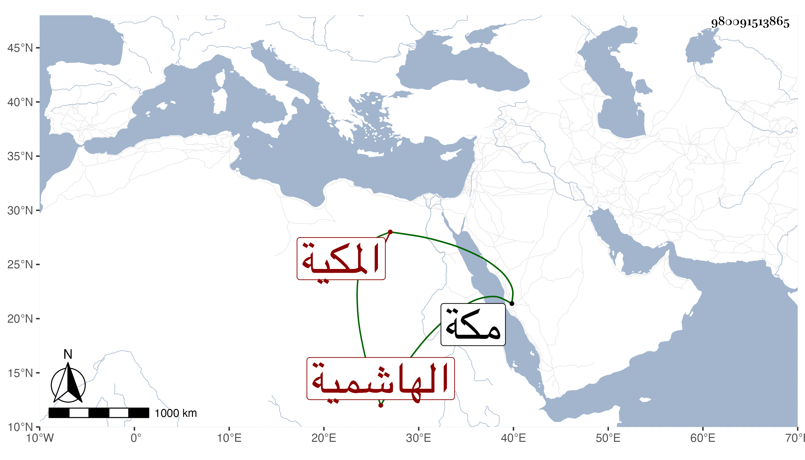

0902Sakhawi.DawLamic.ITO20230111-ara1.EIS1600.980091513865
Biography ID: 980091513865
760
مريم ابنة عطية بن محمد بن أبي الخير محمد بن فهد الهاشمية المكية . ولدت في شعبان سنة ثمان وثلاثين وثمانمائة بمكة ؛ وأجاز لها الزين الزركشي وابن الطحان والعلاء بن بردس والبرهان الحلبي وتزوجها جماعة . وماتت في رمضان سنة خمس وسبعين بمكة عفا الله عنها .
